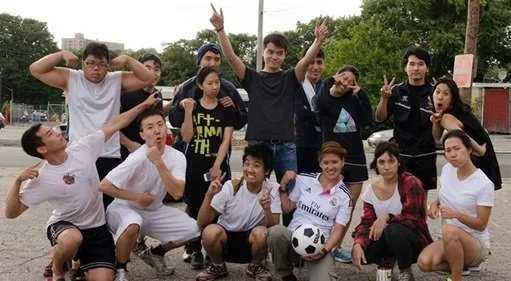

生命團契
LIFE Fellowship
生命團契
LIFE Fellowship
LIFE 是「Living in Faith and Encouragement（在信仰與鼓勵中生活）」的縮寫，是前身為 CYAF（大學生及青年成人團契）的新名稱。
The acronym LIFE stands for Living in Faith and Encouragement — and is the former CYAF (College and Young Adult Fellowship).
這是大學生與年輕專業人士的聚會。小組每月聚會兩次——第二及第四個週五，晚上七時三十分至九時。第二個週五在預先安排的家庭場地聚會，第四個週五則在教會聚會。
This is a gathering of college and university students together with young professionals. The group meets twice a month — the 2nd and 4th Fridays from 7:30 PM–9:00 PM. The 2nd Friday meets at a prearranged home venue while the 4th Friday meets at the church.
如需了解更多關於 LIFE 的資訊，請電郵至 cccri.life@gmail.com 聯絡 Vivian Chen，或聯絡 Enoch Pang 獲取進一步資訊。您也可以在 Facebook 上關注我們：facebook.com/cccri.life。
If you would like to know more about LIFE, please email Vivian Chen at cccri.life@gmail.com. Contact Enoch Pang for further information. You can also visit us on Facebook at facebook.com/cccri.life.
♥ 聚會時間：每月第二及第四個週五，晚上七時三十分至九時 ♥
♥ Meeting Time: 2nd and 4th Fridays of each month, 7:30–9:00 PM ♥
團契相片集
Fellowship Gallery


Join Us Online
無法親自出席？線上觀看直播或隨時收看錄影。
Can't make it in person? Watch our services live or access recordings anytime.